Youtube
-
https://console.developers.google.com/
adresine gidilecek.
Açılan sayfa

- Hesap bilgileri girilerek giriş yapılacak. Açılan sayfa 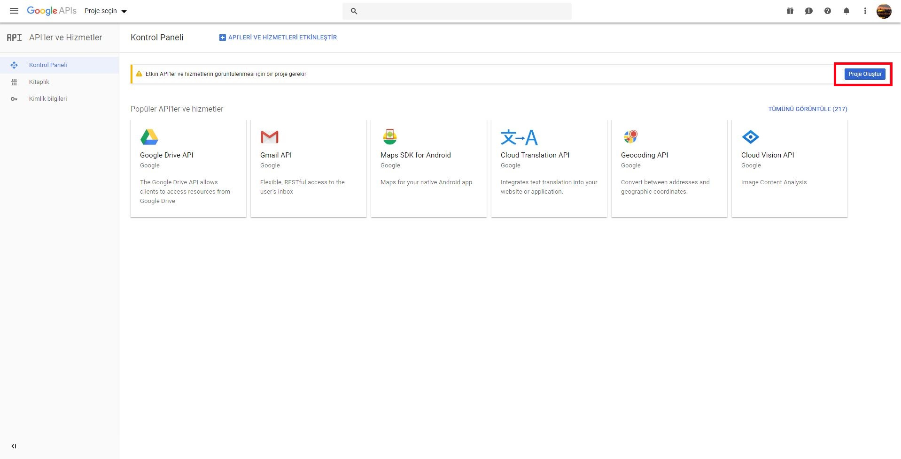
- Bu sayfada "Proje Oluştur" tuşuna basılacak. Açılan sayfa 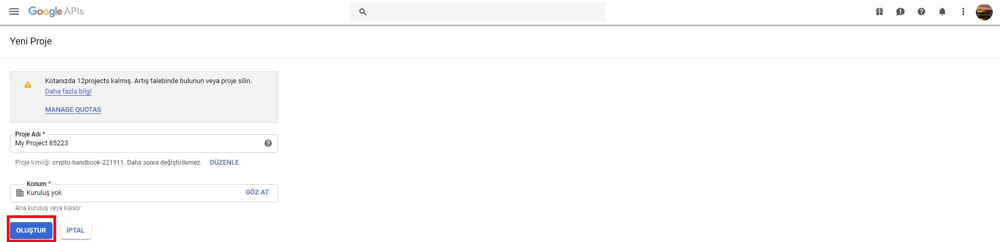
- Bu sayfada proje adı girildikten sonra, "Oluştur" tuşuna basılarak proje oluşturulacak. Açılan sayfa 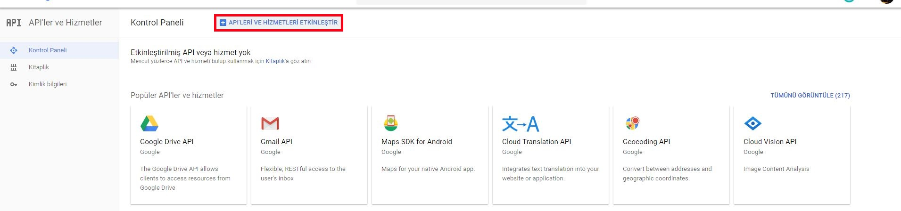
- Bu sayfada "API'LERİ VE HİZMETLERİ ETKİNLEŞTİR" tuşuna basılacak. Açılan sayfa 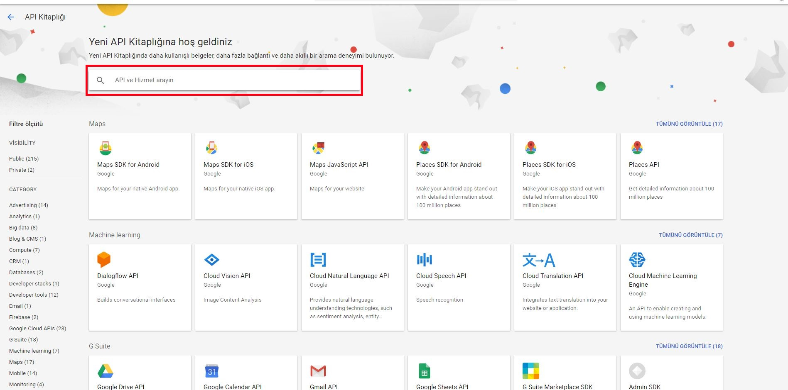
- Açılan sayfadaki arama çubuğuna "youtube data api v3" yazılacak. Açılan sayfa 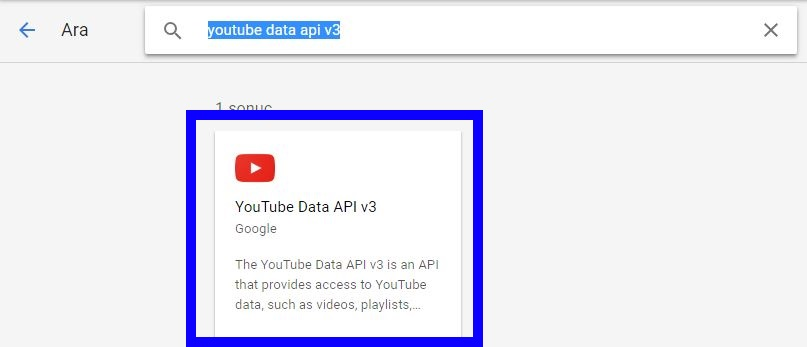
- Aşağıda gelen kutucuk (Youtube Data API V3) tıklanacak. Açılan sayfa 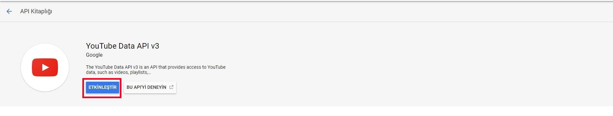
- Bu sayfada "Etkinleştir" tuşuna basılarak, Youtube Data API V3 kullanımı onaylanacak. Açılan sayfa 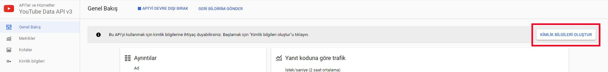
- Bu sayfada "Kimlik Bilgileri Oluştur" tuşuna basılacak. Açılan sayfa 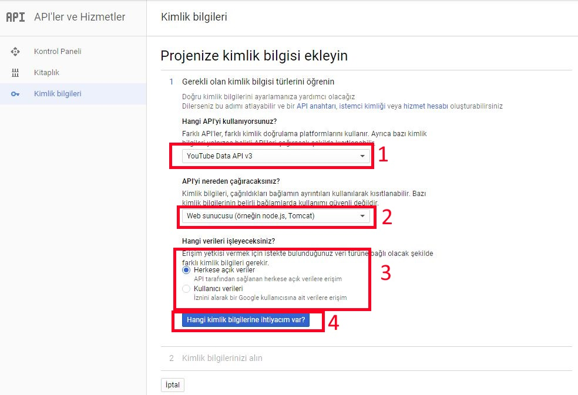
-
Bu sayfadaki alanlar şöyle doldurulacak:
- Youtube Data API V3 seçilecek.
- Web sunucusu (örneğin node.js, Tomcat) seçilecek.
- Herkese açık veriler seçilecek.
- "Hangi kimlik bilgilerine ihtiyacım var?" tuşuna basılacak.
-
ÖNEMLİ
Bu sayfada- İşte API anahtarınız sekmesinde verdiği anahtar saklanacak.
- Bitti tuşuna basılacak.
- https://twitter.com/login?redirect_after_login=https:/developer.twitter.com/ adresine gidilecek. Açılan sayfa 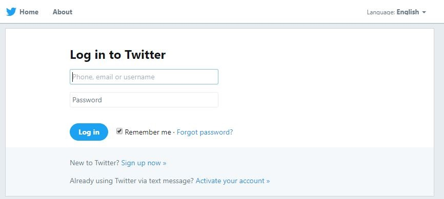
- Hesap bilgileri girilecek. Hesaba girildikten sonra, https://developer.twitter.com/en/apply/user adresine gidilecek. Açılan sayfa 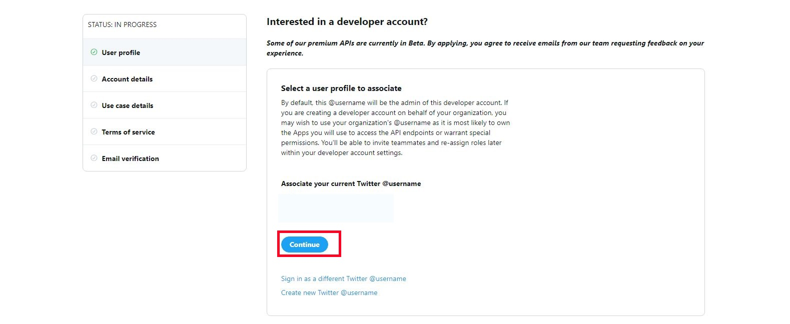
- "Continue" tuşuna basılacak. Açılan sayfa 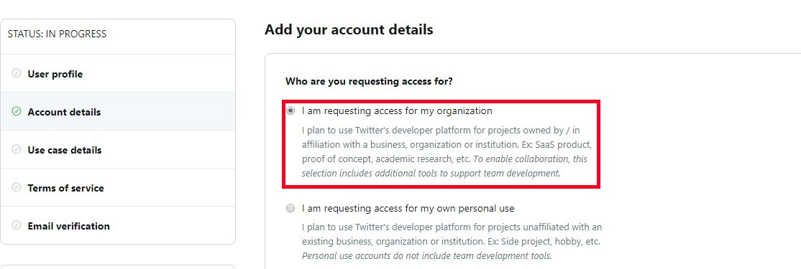
-
"I am requesting access for my organization" seçeneği seçildikten sonra gerekli bilgiler doldurulacak.
- Bu formdaki tüm adımların tamamlanmasının ardından Twitter tarafından bir doğrulama e-postası gelecek. Bu e-posta'daki doğrulama linkine tıklanacak.
- Twitter bir süre talebi inceledikten sonra (yaklaşık bir gün), bir onay e-postası gönderecek.
- Bu e-posta geldikten sonra, https://developer.twitter.com/en/apps/create adresine gidilecek.
-
Açılan sayfadaki bilgiler doldurulacak:
- App name, uygulamanın adını belirtecek. Örn. Eczacıbaşı Web Sayfası olabilir.
- Web site url, https://www.eczacibasi.com.tr olacak
-
ÖNEMLİ
Açılan sayfada, öncelikle üstteki tablardan "Keys and tokens"'a geçilecek.Bu sekmedeki Consumer API Keys başlığının altındaki bilgileri saklayınız.
- https://www.instagram.com/accounts/login/?next=/developer/register/ adresine gidilecek.
- Hesap bilgileri girilerek giriş yapılacak. Açılan sayfa 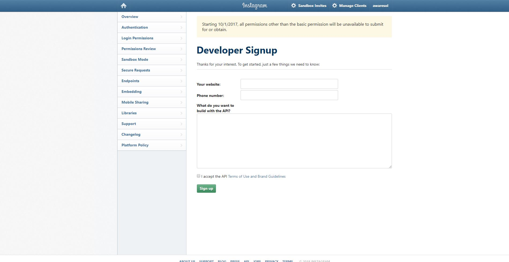
- Sayfada istenen alanlar doldurulacak. Açılan sayfa 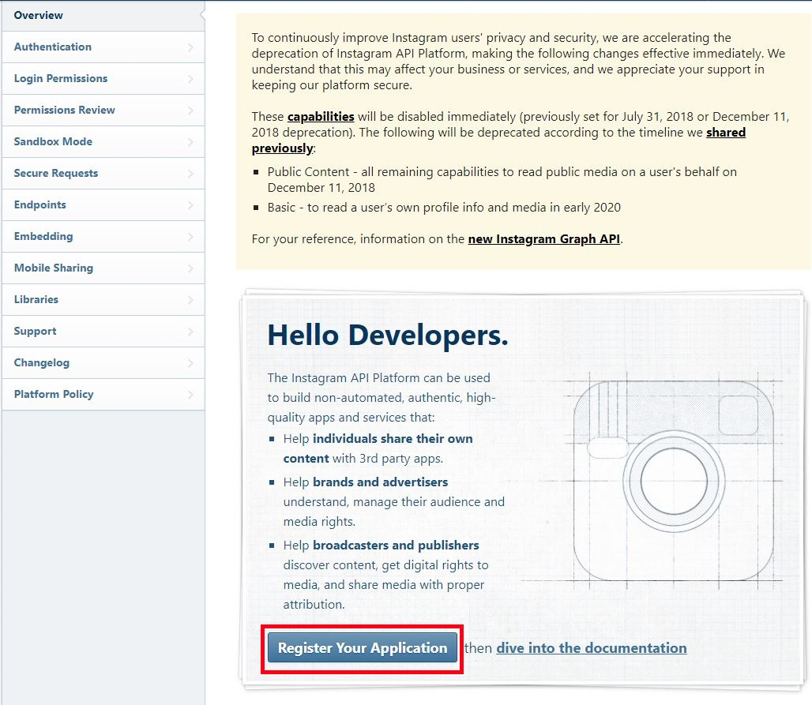
- Bu sayfada "Register Your Application" tuşuna basılarak, uygulama kaydetme sayfasına gidilecek. Açılan sayfa 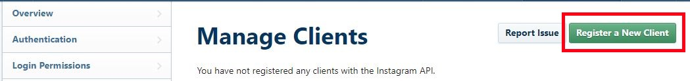
- Bu sayfada "Register a New Client" tuşuna basılarak, yeni bir hesap api hesabı oluşturma sayfasına gidilecek.
- Bu sayfadaki bilgiler doldurulduktan ve hesap oluşturulduktan sonra https://www.instagram.com/developer/clients/manage/ sayfasına gidilecek. Açılan sayfa 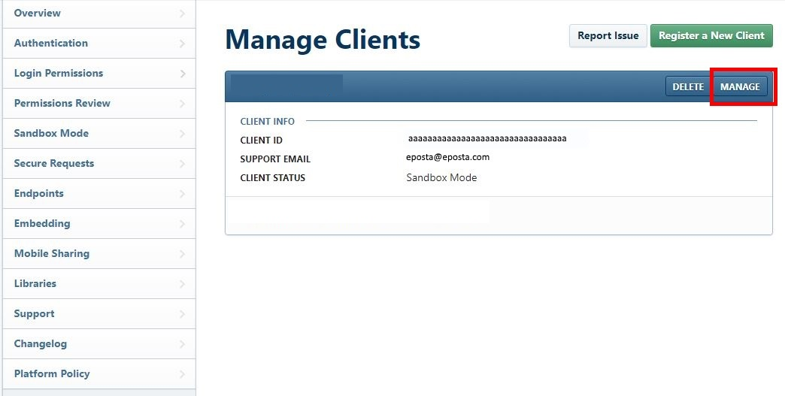
- Bu sayfadaki "MANAGE" tuşuna basılacak. Açılan sayfa 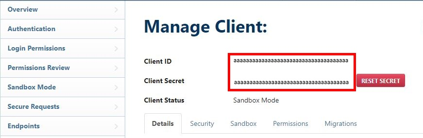
-
ÖNEMLİ
Bu sayfada yer alan "Client ID" ve "Client Secret" saklanacak.